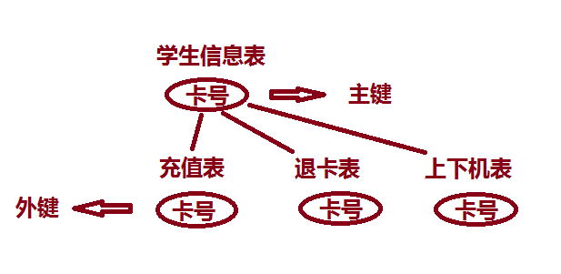

在做机房收费系统时，考虑到了主外键，所以学习了一下，下面我们一起来探究一下它们的关系。
主键Primary key，唯一标示一个实体。是保证数据库的实体完整性，保证数据中数据的正确性和合理性，取值非空唯一。
外键Foreign，是用来使表与表之间联系。用来保证数据库的参照完整性，外键的取值必须来自参照表参照列的值，可以为空也可不为空。
外键的作用：
保持数据一致性，完整性，主要目的是控制存储在外键表中的数据。 使两张表形成关联，外键只能引用外表中的列的值！
主外键的关系结构：
1，一对一，不用引用主外键，把它们放一个表中即可
例如：一个学生只能有一个卡号，那么学生跟卡号放在一个表中即可
2，一对多，引用主外键，‘一’相当于主键，‘多’即是引用主键的外键。
例如：一个班级可以有多个学生，并且一个学生只能属于一个班级，这就是一对多的关系；
3，多对多关系，需要创建一个表，表中需要两个字段，分别是引用，两个多对多字段主键的外键。
例如：
学生表（学号，姓名，…………）主键：学号
课程表（课程号，课程名，…………）主键：课程号
一个学生能选多门课，一个课可以由多个学生选，即是多对多关系，
那么成绩表就是它们之间关系的体，
即引用成绩表（学号，课程号，成绩）。这里学号和课程号，分别是学生表和课程表中学号和课程号的外键
在我们现在这个阶段中，主要还是使用，主外键间的一对多的关系
下面一起来简单看一下大概建成的表结构
--建班级表
create table class(
classid int primary key,--定义班级ID为主键
classname varchar(15)
)
--建学生表
create table students(
studentid int primary key,--定义学生ID为主键
classid int ,--外键值，跟班级表classid 属性类型相同
stuname varchar(20),--学生姓名
---定义外键
foreign key(classid) references class(classid) --本表classid是基于class表classid的外键
)
如上定义了主外键后，两个表间的关系就是一对多的关系了，并且学生表内的classid必须依托班级表的classid存在，也就是说外键必须要主键存在的时候才能创建，
例如：
--在班级表为空的情况往学生表插入一条记录是不允许的：
insert intostudents(studentid,classid,stuname)values(1,1,'小明')
系统会抛出异常提示主键表班级表内班级ID不存在这样是不允许插入的；
必须要先往班级表内插入一条记录：
insert into class(classid,classname)values(1,'一班')
后才能执行插入前面一条往学生表插入信息的语句..
解释：
对于机房收费系统来说，如图：

只有当学生注册了信息，有了卡号，在学生信息表中存在了，才可以进行充值，退卡，上下机等，主外键的作用也就是当没有学生信息时，我们不可以进行充值等操作，而且想要删除学生信息表中的数据，必须先将充值表，退卡表，上下机表中此卡号的人删除之后才可以删除学生信息表中的数据，这样就避免了当学生未注册时，就可以充值的情况
也就是说，如果主键表中数据的更改使之与外键表中数据的链接失效，则这种更改是不能实现的，从而确保了引用完整性。如果试图删除主键表中的行或更改主键值，而该主键值与另一个表的 FOREIGN KEY 约束值相关，则该操作不可实现。若要成功更改或删除 FOREIGN KEY 约束的行，可以先在外键表中删除外键数据或更改外键数据，然后将外键链接到不同的主键数据上去。
外键是用来控制数据库中数据的数据完整性的 。就是当你对一个表的数据进行操作和他有关联的一个或更多表的数据能够同时发生改变，这就是外键的作用
连接查询与内外键的关系：
连接的 连接条件：A表的主键 = B表的外键如果做连接的两表没有主外键关系，那么连接结果没有意义。
例：学生表和选课表做连接，select *from 学生表,选课表where 学生表.学号（主键）=选课表.学号（外键）
主外键可以建级联级触发器，用来做级联删除、更新。作用原理还是因为主外键将两表联系。